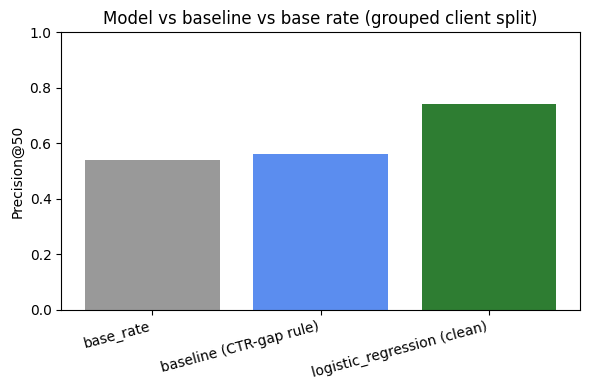

A grouped-split logistic regression model vs. a rule-based baseline, on anonymized search-content data
FlyRank tracks search performance for many client sites at once. Each client's content library can run into the hundreds or thousands of pages, and a small content team cannot manually re-check every page every month to see which ones are slipping in search results. In practice, the team needs a short, trustworthy list: which pages are worth reviewing first, this week, given limited time.
This project builds and honestly validates one way to produce that list. The starting point was a broader exploration into grouping content by shared performance patterns; the work that follows, and that this paper reports, converged on a more concrete and testable version of that question — identifying pages already showing decline signals within the current data snapshot, so a human reviewer can prioritize them, benchmarked against a transparent rule-based baseline rather than presented alone.
Source: content_refresh_anonymized.csv — a 30,000-row, 44-column anonymized snapshot derived from the FlyRank search-intelligence warehouse (fact_content_daily_performance), one row per content item.
Scope note: the full production warehouse (content-client-day grain, queried via DuckDB over remote Parquet) spans 2026-03-01 to 2026-03-31 for development, with June 2026 held out as a sealed test window. This work uses the fixed 30K-row starter extract, not the full 9.8M-row daily panel.
Excluded fields, and why:
client_has_gsc, client_has_ga4, gsc_data_available, ga4_data_available — data-availability flags, not performance signals; including them risks confusing "no data collected" with "the content performed poorly."trend_direction, trend_pct — these define the label itself; using them as features would leak the answer.impressions_last_30d, clicks_last_30d, sessions_last_30d, impressions_prev_30d, clicks_prev_30d, sessions_prev_30d — removed after a leakage audit; these are near-siblings of how the label's underlying trend was computed.content_id, client_id — identifiers only, used for grouping/joining, never as model inputs.gsc_clicks defaults to 0 (not NULL) when GSC data is unavailable — affecting 63.3% of rows. Any click-based feature must first filter to gsc_data_available = TRUE, or it silently undercounts most rows. This starter extract is a cleaner derived sample, but the same caution applies to any future work directly on the warehouse.
Public-safe: no client names appear anywhere; content_id and client_id are anonymized hashes; no raw queries or URLs are included.
Label: is_declining_label = 1 if trend_direction == "down", else 0. Base rate: 54.2% (16,262 of 30,000 rows) — a fairly balanced target.
Baseline (rule-based): a page is flagged if it ranks well but its click-through rate falls below what pages at that same search-position tier normally get, and it receives enough impressions to matter (500+ in 90 days). Score = (tier average CTR − page CTR) × impressions, applied only when both conditions hold. Reason code: ctr_below_position_tier. Action: review title and meta description.
Model: Logistic Regression — chosen for interpretability. Its coefficients can be printed and read directly, which matters for producing reason codes a reviewer can trust, and it gives a fair first comparison against the rule baseline.
Features (21 after leakage removal): numeric signals available before the label window — search volume, competition, CPC, word count, 90-day traffic metrics (impressions, clicks, pageviews, sessions, users, engaged sessions, AI sessions, scroll events), content age, days since last update, CTR, average position, engagement rate, scroll rate, AI-traffic share. Missing values filled by median (fit on training data only). Features scaled with StandardScaler.
Validation design: grouped split by client_id (80/20), not random. The starter data has no per-row date, so a random split would let the same client's pages appear in both train and test — letting the model partly recognize clients it had already seen, rather than learning what decline looks like in general. Grouping matches the real deployment question: will this work for a client the model has never seen?
Leakage checks (two rounds):
impressions_last_30d and impressions_prev_30d at 10–30x the size of every other feature — both are near-siblings of the components the label's trend was built from. The full last_30d/prev_30d family (6 columns) was removed and the model retrained.users_90d) is roughly 30x smaller than the leaky one was. Cross-checked against a random (non-grouped) split on the same clean features: the random split scored 0.86 vs. 0.74 grouped, a 12-point gap confirming the random split had been overstating performance by leaking client identity across train and test.Metric: precision@50 — of the top 50 highest-scored pages, what fraction were actually declining. Chosen because the real use case is a fixed-size ranked review queue, not a global classification score.
| Method | Precision@50 |
|---|---|
| Base rate (guessing) | 0.54 |
| Baseline (CTR-gap rule) | 0.56 |
| Logistic regression (leaky, before audit) | 1.00 |
| Logistic regression (clean, final) | 0.74 |

Model vs. baseline vs. base rate, grouped client split
The honest result: logistic regression measured 0.74 precision@50 against 0.56 for the rule baseline on the same grouped test split — an 18-point observed gap, and 20 points above the 0.54 base rate. The leaky version (1.00) is shown for transparency, not as a result — it was the signal that triggered the leakage audit described in Methodology.
A random (non-grouped) split on the same clean features scored 0.86 — 12 points higher than the honest grouped-split number. This confirms the grouped split was necessary: a random split lets the model partially recognize clients already seen in training, inflating apparent precision.
This model powers a ranked review queue: the top-scored pages, each with a reason code (the top two features driving that page's score) and an action label — a triage aid answering "where should a human look first," not "what should change on the page."
In the top 20 of the test-split queue, "content is old" combined with "low engaged users" is the most common reason-code pair, mapping mostly to Refresh content — followed by "low impressions" (paired with content age) routed to Review manually, and a smaller cluster of "low scroll rate; low engaged users" mapping to Improve engagement. This is broadly consistent with the Methodology coefficient audit, where content age and engaged users both ranked among the top features.
Recommended workflow:
Monitoring: re-score after any new data pull, and spot-check roughly 20 acted-on rows monthly against their actual outcome — if the hit rate drifts well below 0.74, that signals a need for re-validation, not just re-scoring.
All code, notebooks, and data contracts referenced in this paper live in the public repository:
github.com/uomna/flyrank-ml, under work/notebooks/. The capstone notebook (capstone.ipynb) reproduces every table and chart in this paper end to end, including the baseline, the leakage audit, the grouped-split model, and the ranked queue export. Model training uses random_state=42 throughout for reproducible splits.
Built on the FlyRank ML Internship dataset. Data and program credit: https://flyrank.ai.